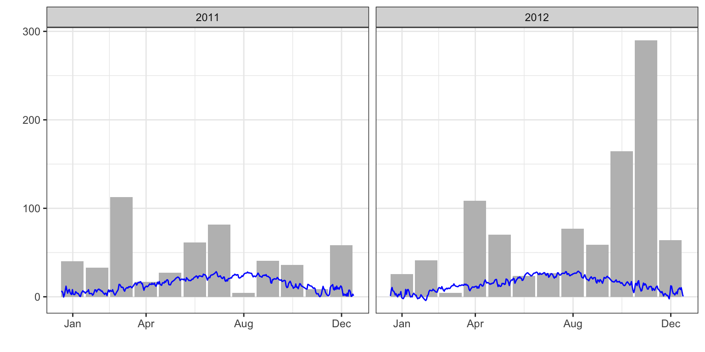
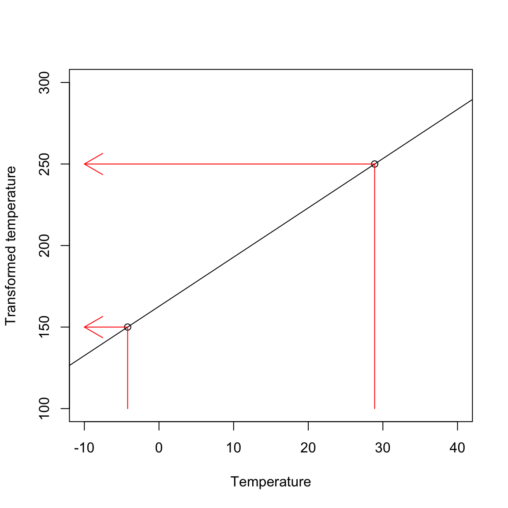
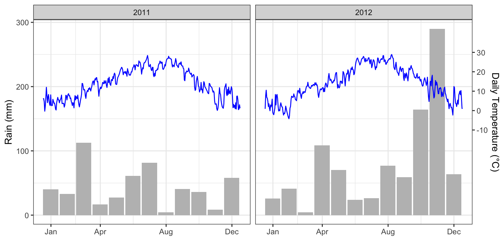

I have often found myself needing to plot a single graph with two y-axes having different scales. For example, this might be useful for representing temperature and rainfall data at a given location. Unfortunately, doing this with ggplot() is not straightforward.
While searching for possible solutions, I discovered that graphs with dual y-axes are generally not regarded as good tools for data visualisation. Hadley Wickham, the author of ggplot2 and several other important R packages, has given some good reasons for this (e.g., at this link). I do not intend to question these general arguments. Nonetheless, the idea that I cannot do with ggplot() something that I could easily do with Excel gets on my nerves. After all, such graphs can be quite useful in some specific circumstances, such as when displaying weather data.
I therefore started looking for a reasonable solution and eventually found my way. I would like to share it in this post.
Let’s consider the dataset DailyMeteoData.csv, which contains daily average temperature and rainfall data for two years at a location in my region (Umbria, central Italy). Let’s open the dataset and use dplyr to make a few useful transformations, such as:
converting the date character string into a date object;
adding variables for Year, Month, and Day of the Year (DOY).
Temperature is a continuous variable and can be easily represented using a line graph, whereas rainfall consists of discrete events and is therefore more usefully accumulated over periods such as ten-days or a month. We can use dplyr once more to create a new rainfall dataset containing the accumulated monthly rainfall, which is more suitable for our purposes. For the sake of simplicity, we assume that the year is divided into 12 months of equal length (approximately 30.4 days), and we calculate the DOY corresponding to the central day of each month, which will be used as the centre of the respective plot bar.
Now we can produce our first graph showing both rainfall and temperature. In the box below, I have played a little with the x-axis ticks and labels, and I have left the y-axis label empty for the moment.
library(ggplot2)ggplot() +geom_bar(dataMeteo2, mapping =aes(x = DOY, y = Rain), fill ="grey",stat ="identity", width =28) +geom_line(dataMeteo, mapping =aes(x = DOY, y = Tavg), col ="blue") +scale_x_continuous(breaks =c(365/12, 365/12*4, 365/12*8, 365) -15, labels =c("Jan", "Apr", "Aug", "Dec"),name ="") +scale_y_continuous(name ="") +facet_wrap(~Year) +theme_bw()

The previous graph does not work very well: the temperature line is hardly visible because its measurement scale is much smaller than that of rainfall. We therefore need to ‘scale’ the temperature variable so that it ranges approximately from 150 to 250. This will make the blue line clearly visible without interfering with the rainfall bars. The minimum and maximum temperature values are -4.2°C and 28.9°C, respectively; we want to map these original values to the new values 150 and 250, respectively, as shown in the figure below.

The previous figure tells us that we could transform the original temperature scale by using the equation of the straight line passing through the two points (-4.2, 150) and (28.9, 250). Thanks to what we remember from geometry courses, we can calculate the slope of such a straight line as:
\[m = \frac{250 - 150}{28.9 + 4.2} = 3.02\]
while the intercept is:
\[q = 250 - 3.02 \times 28.9 = 162.69\]
Thus, the scaling equation is:
\[Y_N = 162.69 + 3.02 ,, Y_O\]
where \(Y_N\) is the new temperature scale, while \(Y_O\) is the original one. The reverse transformation is:
\[Y_O = \frac{Y_N - 162.69}{3.02}\]
Now, we are ready to plot the graph. We transform the temperature to the new scale and plot it; furthermore, we include the second axis by using the sec.axis argument and the sec_axis() function, in which we specify the back-transformation function to the original scale.
dataMeteo <- dataMeteo %>%mutate(newTavg =162.69+3.02* Tavg)ggplot() +geom_bar(dataMeteo2, mapping =aes(x = DOY, y = Rain), fill ="grey",stat ="identity", width =28) +geom_line(dataMeteo, mapping =aes(x = DOY, y = newTavg), col ="blue") +scale_x_continuous(breaks =c(365/12, 365/12*4, 365/12*8, 365) -15, labels =c("Jan", "Apr", "Aug", "Dec"),name ="") +scale_y_continuous(name ="Rain (mm)", sec.axis =sec_axis(~ (. -162.69)/3.02, name ="Daily Temperature (°C)",breaks =c(-10, 0, 10, 20, 30))) +facet_wrap(~Year) +theme_bw()

And we are done!
Another possible approach
Ross Gilmore from Galileo Consulting (Kuala Lumpur) sent me an interesting comment, suggesting the use of the lubridate package for managing dates and the ggh4x package to take advantage of its nested-axis capabilities. Basically, his graph does not use facets; instead, the two years are placed one after the other. Furthermore, he calculated the monthly means for temperature and fitted a cubic spline using geom_smooth() and method = "gam". He also made use of minor ticks, which might be a good idea.
Ross’ code follows. I’d like to thank him very much!